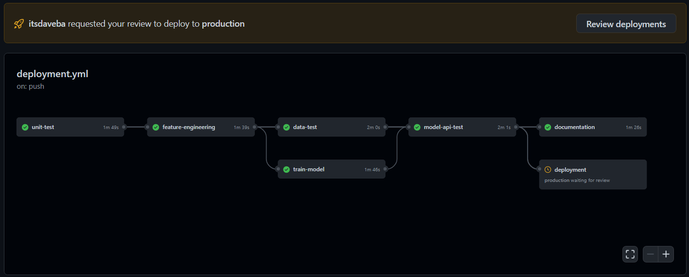

Getting Started
Install MLOps module
~$ python -m venv venv
~$ source venv/bin/activate
~$ python -m pip install --upgrade pip setuptools wheel
~$ python -m pip install -e .[dev]
Download dataset from external source
# Connect to external source and pull files
~$ dvc pull
# Should download the following files
data/api_dataset.pkl
data/dataset_credit_risk.csv
models/api.joblib
models/api_metrics.json
Run the command line interface
# For help, add the --help flag on any command
~$ mlops --help
# Feature engineering
~$ mlops feature-engineering
Clean dataset file created at data/api_dataset.pkl
# Train model
~$ mlops train-model
Model saved at models/api.joblib
Metrics saved at models/api_metrics.json
# Predict outcome
~$ mlops predict 28 4 34 128 0
Prediction: 1
Load the API
# Start uvicorn server
~$ uvicorn app.api:app --port 5000
# Health check
~$ curl -X 'GET' 'http://localhost:5000/' -H 'accept: application/json'
{
"message": "OK",
"status_code": 200,
"data": {}
}
# Serve features request
~$ curl -X 'GET' 'http://localhost:5000/5008832' -H 'accept: application/json'
{
"message": "OK",
"status_code": 200,
"data": {
"user_id": 5008832,
"found": true,
"features": {
"age": 28,
"years_on_the_job": 4,
"nb_previous_loans": 34,
"avg_amount_loans_previous": 128.7918863477761,
"flag_own_car": 0
}
}
}
# Prediction request
~$ curl -X 'GET' 'http://localhost:5000/5008832/predict' -H 'accept: application/json'
{
"message": "OK",
"status_code": 200,
"data": {
"user_id": 5008832,
"found": true,
"features": {
"age": 28,
"years_on_the_job": 4,
"nb_previous_loans": 34,
"avg_amount_loans_previous": 128.7918863477761,
"flag_own_car": 0
},
"prediction": 1
}
}
Testing
# Unit test
~$ pytest -m unit
# Model test
~$ pytest -m model
# API test
~$ pytest -m api
# Data test
# Change tests/great_expactations/great_expectations.yml
# base_directory parameter to the absulute data directory
~$ cd tests
~$ great_expectations checkpoint run credit_risk
~$ great_expectations checkpoint run api
~$ cd ..
Docker container
# Locally
~$ docker build -t mlops:latest .
~$ docker run -d -p 5000:80 --name mlops mlops:latest
Python style (PEP8)
# Adhere to PEP8 python style guide
~$ black .
# Show mismatching rules
~$ flake8
# Sort imports
~$ isort .
GitHub CI/CD workflow
Triggers on each push to the main branch.
Requires manual approval to deploy to production environment.

The GutHub project is deployed on Amazon EC2 using GitHub Actions and AWS CodeDeploy.
Call API from production environment
~$ curl -X 'GET' 'http://{ec2-user-ip}:80/' -H 'accept: application/json'